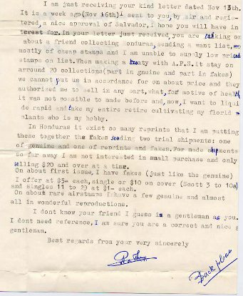

(Pictures of the included forgeries of El Salvador, reduced size)
Note: on my website many of the
pictures can not be seen! They are of course present in the
catalogue;
contact me if you want to purchase the catalogue.
Raoul Ch. de Thuin was a philatelic forger in the mid 20th century. His work is described in "The Yucatan Affair: The Work Of Raoul Ch. de Thuin, Philatelic Counterfeiter", compiled by a specialist editorial staff, an American Philatelic Society handbook. issued in 1974.
Raoul de Thuin was born in Belgium, but he moved to Mexico in 1931 where he became naturalized Mexican. He had his own stamp shop (Maya Shop), but also operated under different names: 'Gilda Rivero Mendozo', 'Thelma Salazaar', 'R.G.Knapen', 'Belgian Export company' and 'French Philatelic Agency' (source 'Stamp Collecting, February 3rd 1967, p 1007). He made many forgeries (mainly forged overprints on genuine stamps, turning them into rarities) of many countries, but he seems to have specialized in South America and specially Mexico. He also faked letters and guarantee marks as well. Though well documented, I did not see many forgeries of de Thuin (maybe because the detection of forged overprints is one of the most difficult tasks in forgery detection).
Most of his forgeries and equipment were sold to the American Philatelic Society (APS) in 1967. The APS then compiled the book 'The Yucatan Affair'. De Thuin then still continued selling forgeries from Ecuador, as can be concluded from the three letters from him to a stamp collector in 1973 (these letters were sold recently (2002) on E-bay, I have put '***' whenever I was not able to read the contents of the letter clearly):
Raoul de Thuin
Sucursal de Correos URDESA
Guayaquil-ECUADOR Guayaquil. nov. 15-1973
I have duly received two kind letters from you and a cheque for
dollars $24.20. Thanks!
I call your attention you sent too much as, if my record is
correct
our account is as follows:
Salvador, a fake (excellent) of Scott No75, priced $200 for $
12.-
Three errors of the wheel set (double or triple) at $1.50... $
4.50
Postage..................................................... $
1.oo
Amount...... $ 17.50
Having received $24.20, I credit you for the difference and I own
to
you $6.70
I examinated pages of old Gibbons you sent, being astonished how
poor
is the listing of Salvador. Of course the most interestant are
stamps,
postage and official, issued between i867 and i905.
Scott is listing along these years, postage stamps: 1120 and
official
stamps 309........... Gibbons along these same years is only
listing 252
postage stamps and 122 official.. Something unbelievable ....
Wheel set (Gibbons166-176) is a very interesting set, All small
values
exist double and sometime triple. The 1 centavo exist in red and
several
values exist with blue surcharge.
It is long years ago I got a true wheel having been used for
these
surcharge and these I sent where made with the true wheel 40
years late.
On about set of Pedro Jose Escalon (i906) I will look in my stock
if
be possible find something for you. This set exist perforated and
unper-
perforated. The 2 cent. exist with double frame and several
values exist
unperforated between stamps. In the same issue surcharged, them
exist
several errors in surcharged, (1909).
Answering to thepart of your letter asking if I have rare old
stamps
on covers, yes I have as the followings: excellent fakes on
covers:
Roman States 50 bajocchi and 1 scudo - some old Switzerland and
Germany,
bisected old English colonies and Mexico. All more or less at $10
each....
I have too excellent fakes of rare Buenos Aires 1858 and 1859 at
$6-
each single or at $10- on covers. Same price mint or used.. It
exist in
this set three tete-beche: the 2 reales of 1858 and three reales
of 1858
and too the 2 reales indigo of i859. These tete-beche are counted
as two stamps
For send on approval these stamps on covers to your friends, I
want
$100 in advance no for distrust but for be sure it exist a want
to buy and
not only a curiosity.. I am an old man and I want to liquide all
it stay
in my stock and take my rest along want it ******
My own language is *** I am daily speaking daily spanish for be
married with
an Ecuatorian lady. As you see my knowledge of english language
is very poor.
However I hope you will understand **************
I profit of this letter ***********************
stay 30 days in your hands
Thanks plenty for all your ***********regards,
Raoul de Thuin
Raoul de Thuin
Guayaquil-ECUADOR Guayaquil June 9th 1974
Dear Mr. Hill,
Just coming back from a trip to Rio de Janeiro where I passed 3
marvellous weeks among my familly, I left to ****** over 5 years
ago.
I found all changed little boys are now youth and those who were
youth are
now married with children. I answer just now for a
misunderstanding of
yours for motive of *** language translation of ***********
Urdesa a Branch of Post office ***** name in Ecuador it is 4
years
ago, I bought a little villa in a new part of this city where
streats will
have no names and where don't reach mailman. For this motive
received
mail in the branch of Post Office Urdesa where manager is an old
kind lady
friend of my wife who advice is by telephone when a letter is
reaching. Thus
I have no store now, no office or sucursal. For motive of my age
(over
84 old) and being 75% blind, I am completely retired and my
actuation is
only to liquide by mail, the big remainder it stay from was my
immense stock.
Here it don't exist collector buyer, and english stamps are
unsellable. Cover
************************************************************
to put us in accordance, A.P.S. said I may sell this remainder
where and when
I can do it, and it is this remainder I want to sell by
correpondence, Gibbons
is an excellent catalogue for Europe an Eng.Col. but completely
deficient for
America. Your pages contains less than the half of stamps
regurarly issued in
Salvador. If you want I will send to you photostatic copies of
pages of Scott.
I am interested to buy a few reprints of Gibbons Salvador sets
(watmd and
unwtmk) 158 to 169- 220 to 231 and too postage due type D33 in
orange colour.
In genuine I want to buy a few Gibbons 21,59. I am interested to
buy rare Colom-
bia for having a customer interested in this country.
SALES : In Salvador I can supply all rare stamps (excellent fakes
listed in
Scott and, from these listed in Gibbons excellent rare fake (one
of each)
Nos: 65 ($11-) and the rarest 65a ($15) I have too for sale some
genuine english
colonies as Br.Guiana, Cape, etc..
Awaiting your early news, with my very best regards,
Sincerely yours,
****signature of R. de Thuin***
Please to pardon bad presentation of my letter, as I am almost
blind, I am
writting on tact..
Raoul de Thuin
Sucursal de Correos URDESA Guayaquil Nov. 23th-73
Guayaquil - ECUADOR
I am just receiving your kind letter dated Nov 13th.
It is a week ago (Nov i6th) I sent to you, by air and regi-
tered, a nice approval of Salvador, I hope you will have in
terest for. In your letter just received, you are talking on
about a friend collecting Honduras, sending a want list,
mostly of cheap stamps and I am unable to supply low priced
stamps on list. When making a treaty with A.P.S. it stay on
arround 20 collections (part in gnuine and part in fakes)
we cannot put us in accordance for on about price and they
authorized me to sell in any part, what ,for motive of health
it was not possible to made before and, now, I want to liquid
rapid and take my entire retire cultivating my florid
plants who is my hobby.
In Honduras it exist so many reprints that I am putting
these together the fakes sending two trail shipments: one
of genuine and one of reprints and fakes. For made shipments
so far away I am not interested in small purchase and only
selling $20 and over at a time.
On about first issue, I have fakes (just like the genuine)
I offer at $5= each, single or $10 on cover (Scott 3 to 10a)
and singles 11 to 29 at $1- each.
On about rare airstamps I have a few genuine and almost
all in wonderful reproductions.
I don't know your friend I guess is a gentleman as you.
I don't need reference, I am sure you are a correct and nice
gentleman.
Best regards from your very sincerely
*******Signature of Raoul de Thuin**********

(Pictures of the included forgeries of El Salvador, reduced size)
Letter offering de Thuin products of 1947 under the name 'Belgian
Export Co.'
Another De Thuin letter under the name 'Merida Philatelic
Agency'.
Here a de Thuin letter with "FREE FRENCH PHILATELIC
AGENCY" during World War II.

Raoul de Thuin forgery of Guadalajara.

Another forgery made by Raoul de Thuin